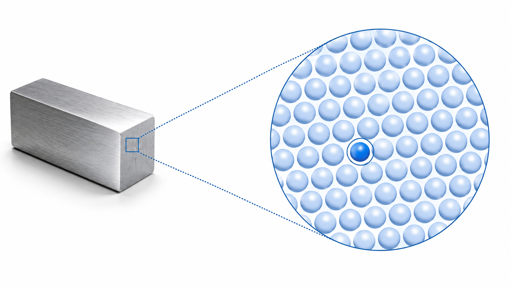
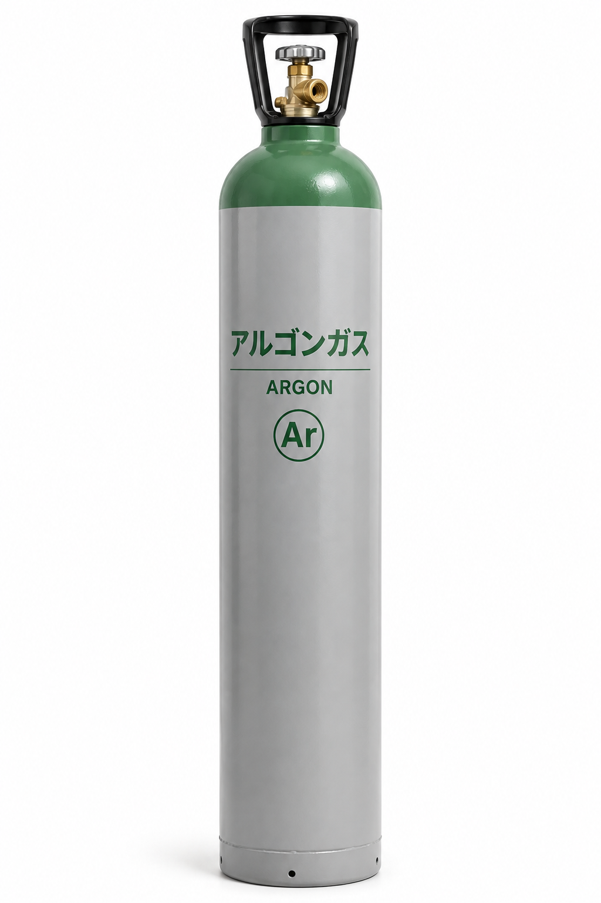
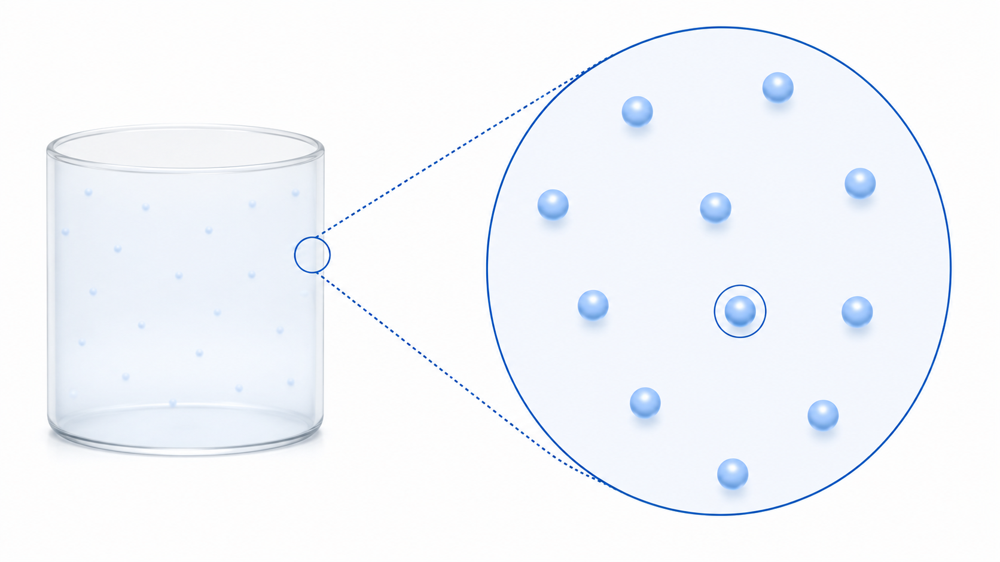
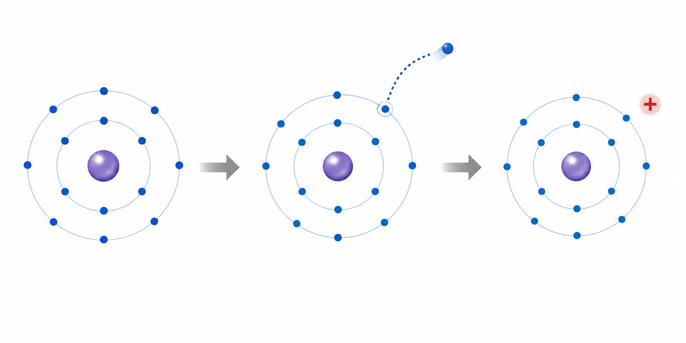

SPUTTERING / 02
原子・アルゴン・イオン
スパッタリングで使う「原子」「アルゴン」「イオン」を見ていきます。
ATOM
原子って何？
金属も、とても小さな「原子」がたくさん集まってできています。

※ 原子を球で表したイメージです。実際の原子の見た目や大きさをそのまま表したものではありません。
スパッタリングでは、この原子を材料から飛び出させて膜をつくります。
ARGON
アルゴン（Ar）って何？
アルゴン（Ar）は、目には見えない気体です。スパッタリングでは、装置の中にアルゴンガスを入れて使います。

このような容器に入れて供給されます。中のガスそのものは目には見えません。

アルゴン原子は、互いに離れて存在しています。
※ 青い球はアルゴン原子を表したイメージです。
アルゴンは、ほかの物質と反応しにくい気体です。
そのため、スパッタリングで材料の原子を飛び出させるために使われます。
そのため、スパッタリングで材料の原子を飛び出させるために使われます。
ION
イオンって何？
原子の中では、＋と－の電気がつり合っています。
もとのAr原子＋ と － が同じ全体では電気をもたない
→
電子（－）が1個外れる－ が1個減る
→
Ar⁺＋ が1個分多くなる＋のイオンになる
－の電気をもつ電子が1個外れると、＋が1個分多くなります。
この状態が、Ar⁺（アルゴンイオン）です。

※ 電子の配置や大きさを、理解しやすく簡略化した模式図です。
Arアルゴン原子
電子（−）が1個外れる→
Ar⁺アルゴンイオン
01の「小石」の役目をするのが、このAr⁺です。
Ar⁺
このAr⁺をターゲットにぶつけて、材料の原子を飛び出させます。